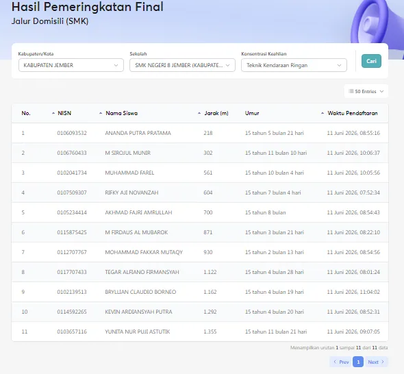
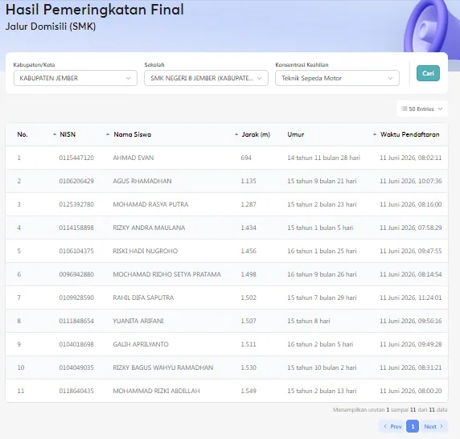
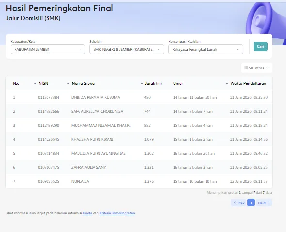
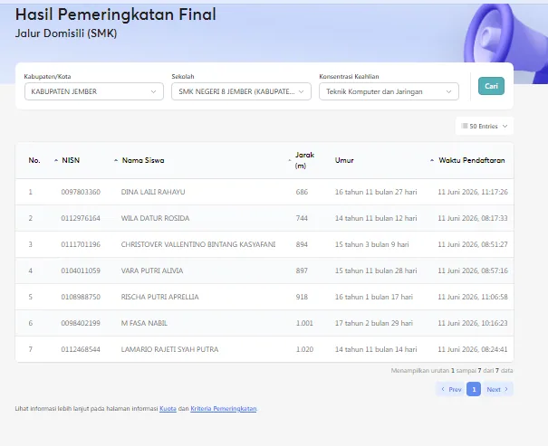
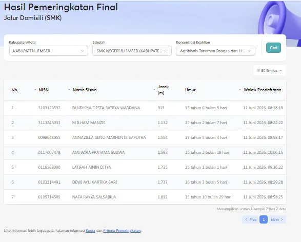
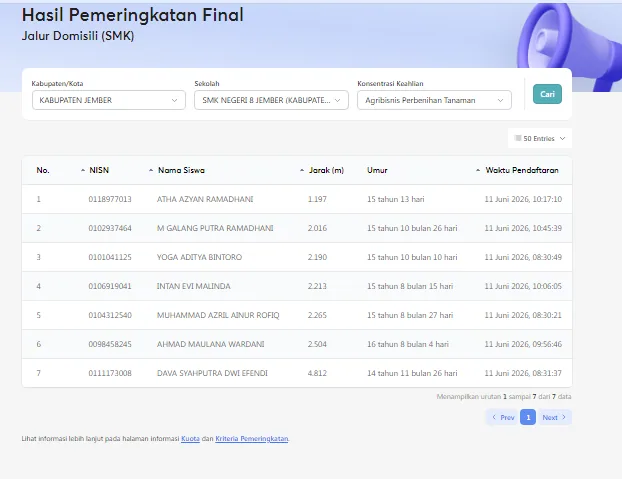
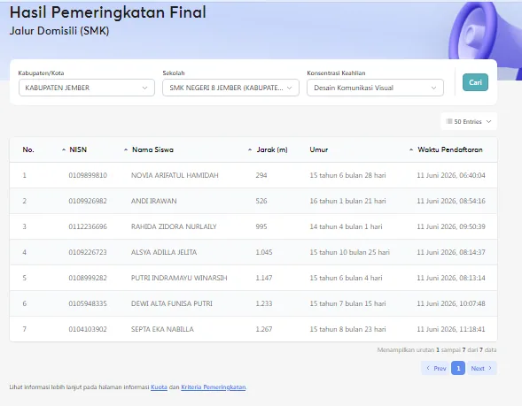
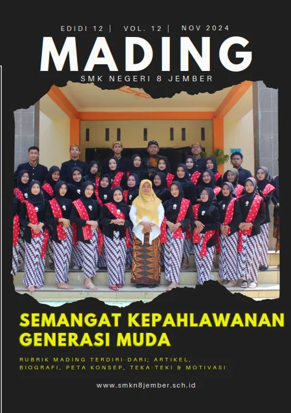

BerandaE-Mading
E-Mading Eskalaber
Majalah dinding digital karya siswa SMKN 8 Jember — kompilasi edisi tersimpan lokal, dikelola tim jurnalistik & DKV.
Kompilasi Edisi
Arsip drive lengkapBaca mading digital Eskalaber
Klik halaman untuk membaca layar penuh. Edisi terbaru juga dipublikasikan melalui Instagram @smkn8_official.


Edisi 1 · klik untuk memperbesar

Edisi 2 · klik untuk memperbesar

Edisi 3 · klik untuk memperbesar

Edisi 4 · klik untuk memperbesar

Edisi 5 · klik untuk memperbesar

Edisi 6 · klik untuk memperbesar

Edisi 7 · klik untuk memperbesar

Peluncuran E-Mading · klik untuk memperbesarPunya karya tulis, foto, atau desain?
Bergabunglah dengan ekstrakurikuler jurnalistik atau DKV dan terbitkan karyamu di E-Mading Eskalaber.